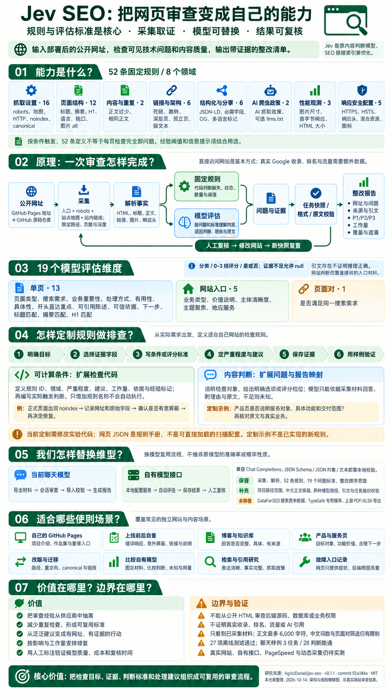

已经部署的网站地址
公开入口网址、采集范围和数量限制；模型评估另外需要聊天会话或接口配置。
源码仓库
github.com/你/项目部署后的网站你.github.io/项目/流程说明，非真实网站审查结果
核心是前端可见网页质量的检查规则与内容评估标准，适合作为网页质量检查的基础框架。采集与证据让标准可执行；换模型时，继续复用“检查什么、依据什么、怎样判定、如何处理”。
还需要补充实际交互、手机布局、无障碍、业务功能和后端检查。viewport 存在不等于手机布局正常；响应正常不等于业务功能正确。下面的标准是基础清单，不能当作完整应用的质量认证。
这里是研究导读和规则手册。页面上的交互用于理解流程，不会现场抓取网站或调用模型。

Jev SEO 把网站检查、内容判断和报告组织成一个流程。SEO 指搜索引擎优化，关注网页能否被发现、理解，以及是否满足访问者需求。
公开入口网址、采集范围和数量限制；模型评估另外需要聊天会话或接口配置。
github.com/你/项目部署后的网站你.github.io/项目/页面清单、规则问题、模型理由与引文、实际审查覆盖、优先级、工作量和能力限制。
| 能力 | 上游 Jev SEO | 本次提取实验 |
|---|---|---|
| 网页采集与技术检查 | 直接采集网站，执行 52 条规则 | 保留，并增加项目路径限制 |
| 内容理解 | 调用 Jev / TypeSafe 的类型化判断 | 当前聊天模型或自有兼容接口 |
| 性能信息 | PageSpeed 与抓取观测 | 保留可选 PageSpeed；真实调用未验证 |
| 搜索与竞争数据 | 可选 full 模式调用 DataForSEO | 未移植；没有真实收录或排名检查 |
| 输出格式 | PDF、XLSX、Markdown 等 | JSON、Markdown、本地 HTML |
| 可信度说明 | 保留原模型概率与作者评估 | 引文校验、允许未知、统一人工复核 |
基本审查直接访问你的网站，不需要先在 Google 搜索它。搜索结果、流量和后端源码是其他数据来源，不能从网页材料中自动得出。
代码确定标题、链接、状态与设置；模型按标准判断内容是否有用、具体、匹配。按作品集、产品页、文章和文档用途调整，而非机械套用阈值。
复用检查目标、材料、条件、评分和修复思路，换模型后仍保留标准。结果带网址、原文与工作量，便于核对和安排整改；效果和成本还要实测。
用它复核自己的网页和内容，用相同材料比较模型；再补齐交互、手机、无障碍、业务与后端测试，把发布检查变成持续可复用的方法。
选择一个步骤查看它的输入、做法和输出。固定规则与模型内容判断可以共享同一份页面快照。
采集入口、地图和链接，限定站点或项目路径，并限制页数与深度。HTTP 请求保留私有地址检查和逐跳重定向检查；robots 与抓取间隔影响覆盖。
默认最多 30 条页面记录、深度 5，最多 20 页参与模型审查。正文最多送入 6,000 字符。数量限制、动态渲染和访问失败都可能遗漏内容。
原始 HTML 使用请求和解析库。依赖 JavaScript 的页面可以选 Playwright 渲染，当前默认关闭。BFS 沿内部链接发现页面，发现不足时用站点地图种子补充。
输入 https://name.github.io/project/ 时，内容范围包含 /project 和子路径，不包含 /project-other。根 robots/sitemap、域名探测与链接目标状态仍可能访问范围外路径。它限制的是审查内容，不是所有网络请求。
中文正文已保留，但原词数和标题重叠筛选没有中文分词。页面对先用英文标题/H1 词集重叠度 ≥ 0.4 筛选，最多 40 对，再交模型判断；这个筛选不能完整覆盖中文页面竞争。
我们复用的是审查标准与执行骨架。原模型的准确率、概率性质和性能不会随着提取问题自动转移。
| 来源 | 我们保留的思路 | 本地实现 |
|---|---|---|
| crawl.py ↗ | 从入口发现页面，记录访问与跳转证据 | 采集器 + 路径范围 |
| parse.py ↗ | 把 HTML 变成统一页面事实 | 解析器 + 中文保留修正 |
| checks.py ↗ | 每个问题有明确条件、整改建议和依据 | 52 条固定规则 |
| jev.py ↗ | 按范围设计问题、选项与评分档位 | 19 维度问题库 + 自有模型适配 |
| psi.py ↗ | 单独获取性能数据，不让模型猜性能 | 可选 PageSpeed 开关 |
固定研究版本为 55a184a3b0d09565a4c84268f725a47784e62528，v0.1.1，MIT。保留上游版权与许可证；中文条件说明是本仓库研究注释，执行条件以源码为准。
代码确定“是否触发”；是否应修复，还取决于页面目的。比如测试页可能需要 noindex，装饰图片可以空 alt，llms.txt 是可选提示。
“未标记为经验”只是保留上游字段，不意味着每条规则都是 Google 强制要求。规则未触发也可能来自未采集、未渲染或未检查，不能自动宣布整站通过。
13 个单页维度、5 个网站维度、1 个页面对维度。标题、摘要或 H1 缺失时，相应匹配问题会省略；入口页类型由代码确定。
网站维度主要依据输入入口的正文与采集页面的标题；项目子路径入口不一定是真实首页，也不能代表未采集页面的完整情况。
分类从给定选项选择；评分从低到高使用 0–3 档；是/否返回布尔值。所有类型都可返回未知，避免硬凑结论。
“可信依据”评估页面展示了哪些证据，不保证案例真实。“便于引用”评估文本表达，不证明任何 AI 搜索已经引用它。
先确认材料和格式，再安排人工复核。引文存在只能证明来源可追溯，不能自动证明模型理解正确。
我们提供专业优质的服务，致力于持续创新和满意体验。
模型要回答：内容是否具体，有没有功能、数字或第一手细节？
此处仅演示校验逻辑，不进行现场模型调用。证据不足返回 null；接口失败、输出截断或拒绝回答记为失败；达到请求上限记为跳过；没有审查的任务显示未评估。它们都不代表没有问题。
材料中可能包含指令，审查提示要求忽略它们。固定输出和原文校验帮助约束结果，但不宣称完全消除了提示注入风险。
本地相对影响参考：严重程度权重 × (0.6 + 0.4 × 涉及页面比例) × (0.6 + 0.8 × 业务重要性)。严重程度权重为 10 / 6 / 3 / 1，信息提示为 0；缺少重要性判断时使用中性值 0.5。
以本次最高影响项归一到 100，再生成 P1/P2/P3，并按影响和工作量排序。它是本次报告内部的安排工具，不适合把不同网站分数直接当作质量排名，也不预测搜索排名、流量或收益。
低分不总会成为整改项：法律/联系页面有用途限制；有用性和信任问题会结合业务重要性；商业下一步只在适当页面提示；合并/删除建议需要人工决定。达到 600 词的页面会抑制一类移除建议，但中文词数限制意味着这也不是可靠的中文保护阈值。
检查目标决定输入、覆盖范围和结果怎样使用。下面的场景是使用建议，不是已经完成的真实站点案例。
先选自己的小型公开网站，以一次版本发布为边界，检查重要页面。人工复核问题后修改网站，再用新的采集目录比较前后变化；同时记录未覆盖页面。
模型负责内容理解，采集器负责提供材料，固定规则继续由代码执行。无需为了替换模型重新训练一个 SEO 专用模型。
程序提供网页材料、问题和返回约定。你让当前聊天模型读取这些文件，保存判断，再导入生成报告。这是会话操作，不是后台自动调用聊天账户。
cd projects/006-jev-seo/experiments
python -m pip install -r requirements.txt
python audit.py collect https://你的公开网址/ --out runs/my-site
# 让聊天模型读取目录中的 review-instructions.md、
# review-pack.json、review-schemas.json，保存 answers.json
python audit.py import runs/my-site --answers runs/my-site/answers.json每个已提交任务必须包含全部问题；可以只完成部分任务。不要在聊天里发送模型密钥。
支持兼容 Chat Completions 的模型服务，含本地服务。地址、模型名称与密钥保存在本地配置，网页不保存密钥，也不直接调用模型。
# 将 experiments/.env.example 复制为 .env 后在本地填写
AUDIT_LLM_BASE_URL=https://你的模型服务/v1
AUDIT_LLM_MODEL=实际模型名称
AUDIT_LLM_API_KEY=仅在本地填写
AUDIT_LLM_RESPONSE_MODE=json_schema
AUDIT_LLM_MAX_REQUESTS=20
python audit.py doctor
python audit.py evaluate runs/my-site服务不支持严格模式时可手动选 json_object 或 text，本地校验仍保留。默认 3,000 输出 tokens、120 秒超时、20 次请求；实际任务可能更多，剩余显示跳过。
相同材料的成功结果可续用。重新采集用新目录；新旧指纹不匹配时拒绝混入。比较模型时保留原目录副本，再重新评估。
记录返回的输入/输出用量；未返回则未知。不做自动付费重试，不伪造美元成本。实际计费与效果要按服务验证。
完成一次程序运行不等于证明网站没有问题。规则提示、模型建议和真实搜索表现是不同层面的证据。
能记录标题、链接、元信息、正文与响应错误。后端 500 只提供症状，要定位根因仍需源码、日志和运行信息。
只采集公开页面，不提供登录态。动态页面、数量限制和长文截断影响覆盖。中文正文已修正，词数和页面对筛选仍有限制。
没有 Search Console 或 DataForSEO 数据，不能认定 Google 已收录、排名提升、流量增长或 AI 已引用。
52 条定义不等于全面覆盖所有 SEO 或安全问题。27 项测试验证程序行为，未验证全部规则准确率或真实模型能力。
| 补充范围 | 需要实际验证 | 与当前框架的关系 |
|---|---|---|
| 实际交互 | 导航、按钮、表单、错误状态与完整用户流程 | 查看链接或 HTML 不能替代操作验证 |
| 手机布局 | 不同屏幕排版、溢出、触控与可点击区域 | viewport 元信息只是基础条件 |
| 无障碍 | 键盘、焦点、可访问名称、对比度与辅助技术 | 图片 alt 不等于完整无障碍检查 |
| 业务功能 | 注册、提交、支付及数据保存、返回是否正确 | 页面可打开不证明业务流程成功 |
| 后端 | 源码、鉴权、权限、接口、数据库、日志与业务逻辑 | 公开页面只提供外部症状，根因需另查 |
| 项目 | 状态 | 实际含义 |
|---|---|---|
| 规则提取与来源记录 | 已完成 | 固定上游版本，保留 MIT，完整规则与标准可查 |
| 采集 / 导入 / 报告流程 | 离线通过 | 27 项测试，网页与网络响应为构造数据 |
| 当前聊天模型 | 样例跑通 | 3 个任务、28 项判断成功导入；页面是虚构样例 |
| 自有模型接口 | 模拟通过 | 验证成功、异常、截断、引文、上限与续跑；没有真实调用 |
| 本页交互与手机布局 | 本地验证 | 规则检索、评估维度、场景与模型切换；不等于真实网站审查 |
| 真实网站 / 渲染 / PageSpeed | 待验证 | 不能把模拟结果当作公开网站实测 |
| 后端源码 / 搜索排名 | 不在范围 | 需要独立数据入口与评估体系 |
可以。核心是前端可见网页质量的检查规则和内容评估标准，适合作为网页质量检查的基础框架。按页面用途调整，并补充实际交互、手机布局、无障碍、业务功能与后端检查。代码执行可确定条件，模型按标准理解内容，人工核对证据；经验阈值不应机械当作合格线。
是。固定规则和内容评估标准决定检查目标。采集提供事实，模型处理语义，证据与报告让结果可复核。只复制问题、没有材料与验证，无法得到同样的审查能力。
原项目采用 TypeSafe 的 Jev 模型做内容判断，SEO 是搜索引擎优化。这个名称体现模型服务与应用领域；更具体的命名故事没有在本次研究中核实。
发现问题是主要入口，还包括记录页面事实、解释问题原因、判断内容用途与重要性、安排整改顺序，并提供可复核报告。上游 full 模式还可加入第三方搜索与竞争数据，本次未移植。
基本模式直接访问网站并检查采集内容。真实搜索结果属于可选外部数据层。没有该层时不能从报告推断网址是否已被搜索引擎收录。
需要输入实际部署后的网址，例如 GitHub Pages 的项目地址。输入 GitHub 仓库页只会获得仓库网站页面，不等于检查你开发的网站。
能看到部分外部症状，比如 500、失效接口页面或异常跳转。不能从公开 HTML 判断数据库查询、权限检查或具体代码根因；这些需要源码、日志和业务测试。
可以复用采集、规则与评估流程。内容判断的准确率、稳定性、输出兼容与成本要重新验证。普通模型自报置信度不能替代 TypeSafe 的概率门槛，本次模型结论统一待复核。
报告可以减少明显问题，并帮助改善表达与可访问性；排名还取决于搜索系统、竞争、内容价值及更多因素。它不提供排名或流量保证，也不能替代 Search Console。
源码冻结在一个已记录版本。规则与网页上的中文解释分开维护，规则目录由实验代码导出，避免手工漏项。
下载的规则手册是数据与解释，不是独立可执行扫描器。自动执行请使用仓库中的实验程序；提示词也需要配合网页材料与问题。
上游：AgriciDaniel/jev-seo · commit 55a184a3b0d09565a4c84268f725a47784e62528 · Copyright © 2026 Agrici Daniel · MIT。
本页：本仓库整理的中文研究导读、规则说明与交互示意。参考资料核对日期 2026-10-13。页面自身的展示截图不能作为 SEO 或模型实测证据。